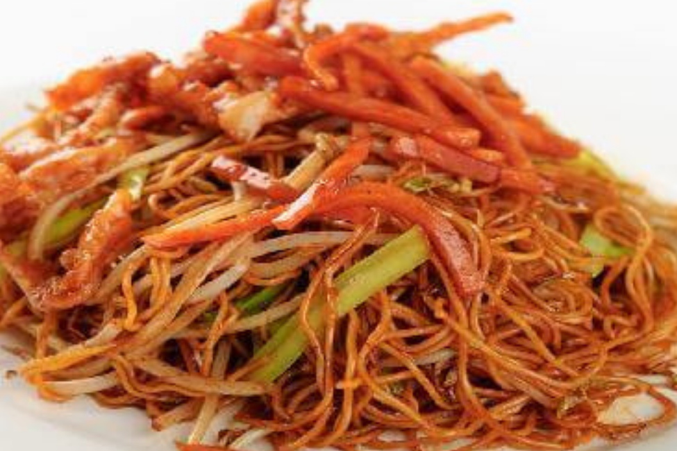
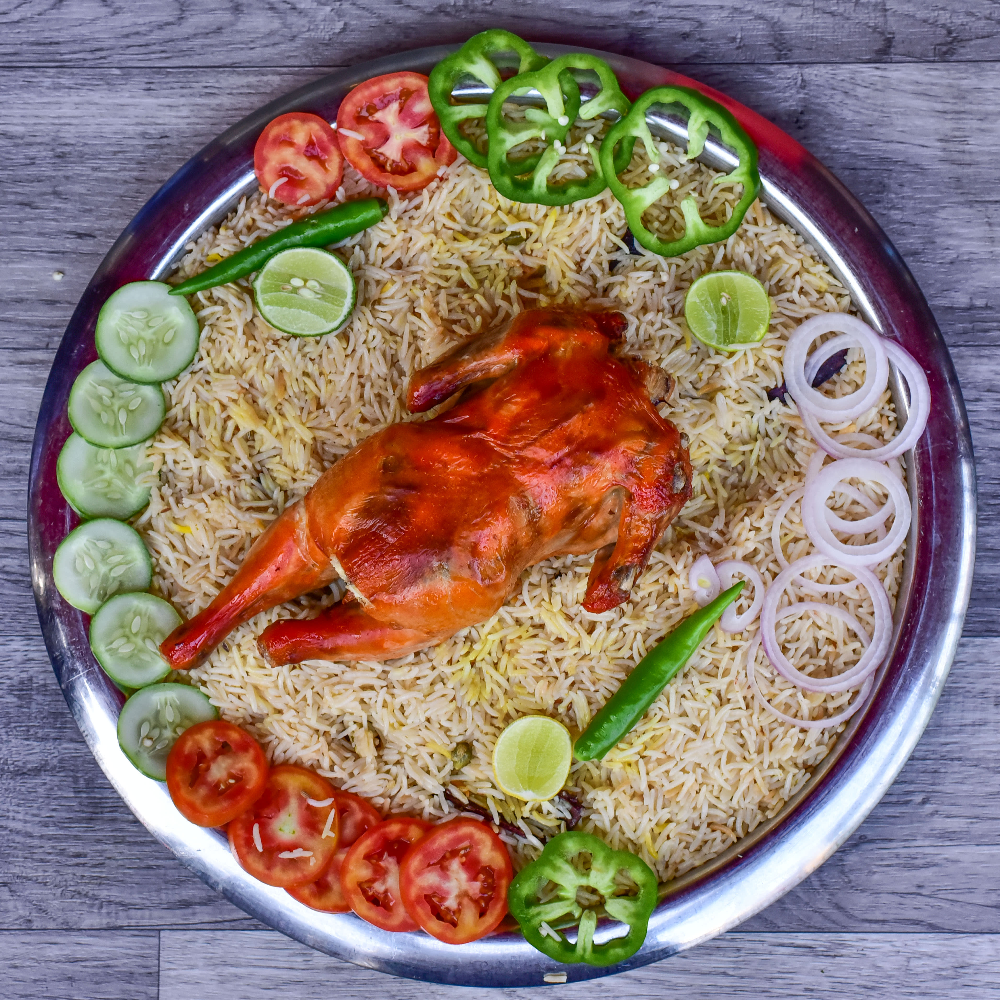
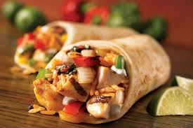

American chopsy
One of the most popular fusion Chinese recipe that is made in India is veg American chopsuey. This crispy crunchy snack is popular with both kids and adults alike.
Pizza

Pizza is a dish of Italian origin consisting of a usually round, flat base of leavened wheat-based dough topped with tomatoes, cheese, and often various other ingredients,which is then baked at a high temperature, traditionally in a wood-fired oven.
Manthi Rice
Chicken Mandi Recipe is a delicious preparation of chicken cooked with mandi powder served over a layer of basmati rice. It is packed with flavours and taste of the perfect blend of spices. Serve it along with raita for a delicious meal.
Shavarma
Shawarma is thinly sliced cuts of meat, like chicken, beef, goat, lamb, and sometimes turkey rolled into a large piece of flatbread or pita that has been steamed or heated.